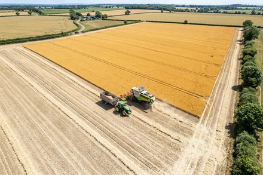
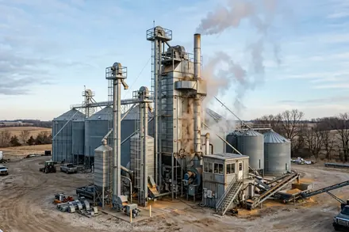
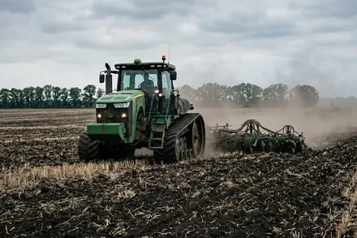
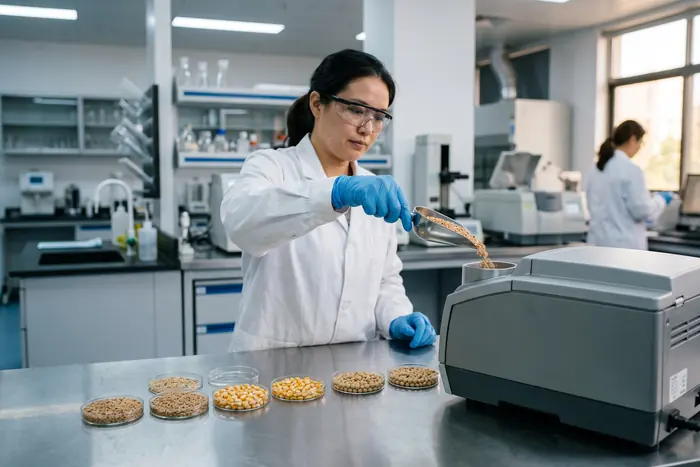
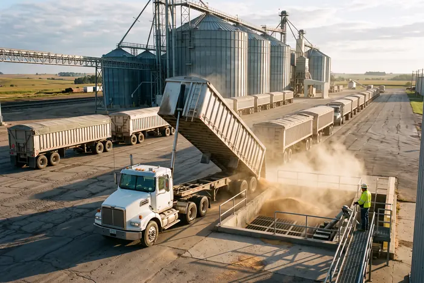
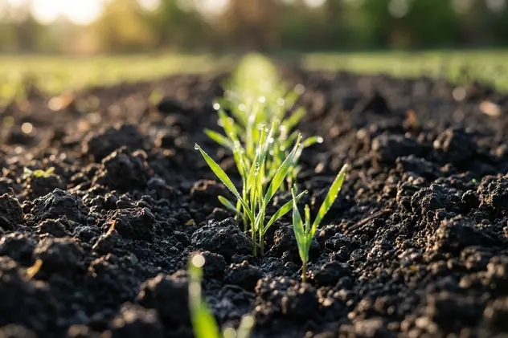
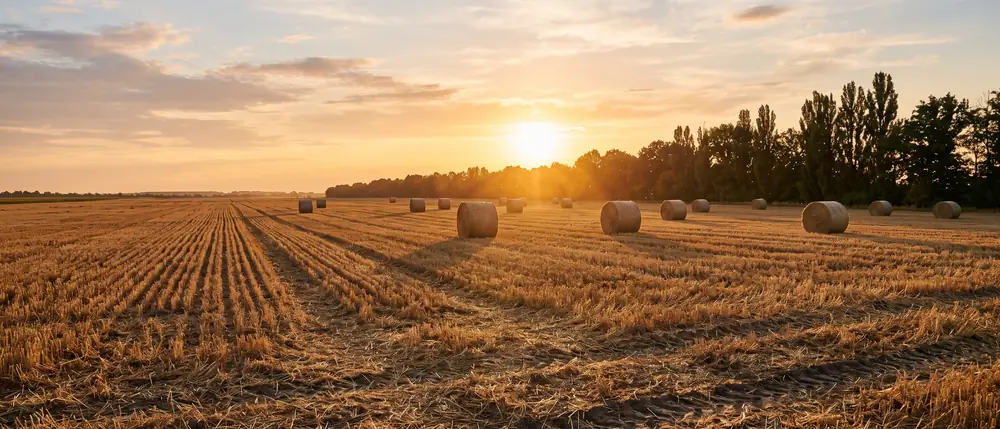

Завершили збирання озимої пшениці: 6,4 т/га по всьому масиву
Найкращий результат за вісімнадцять сезонів. Розповідаємо, що дало приріст: сівозміна, строк сівби чи погода.
ЧитатиКоротко про сезон, техніку, врожайність і рішення, які ми приймаємо.

Найкращий результат за вісімнадцять сезонів. Розповідаємо, що дало приріст: сівозміна, строк сівби чи погода.
Читати
Тепер уся кукурудза проходить сушку без черги. Що це змінює для партнерів у пік збирання.
Читати
Витрата пального, вологозабезпечення, врожайність проти класичного обробітку. Цифри без прикрас.
Читати
Показник, через який найчастіше сперечаються на вагах. Розбираємо методику й наші межі допуску.
Читати
Порахували, на якому обсязі вагон вигідніший за автопарк, і де починається економія для покупця.
Читати
Два роки відбору проб. Що з'ясувалося про фосфор і чому ми змінили план внесення на третині площ.
Читати
Надішліть культуру, обсяг і бажані параметри якості — відповімо з ціною та графіком відгрузки протягом одного робочого дня.